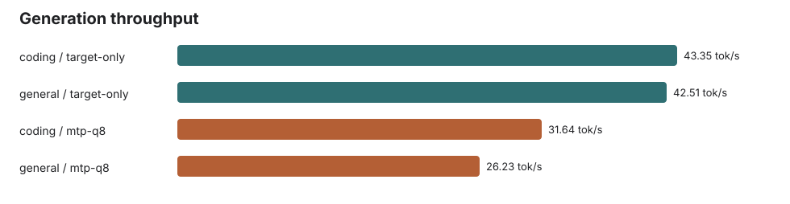
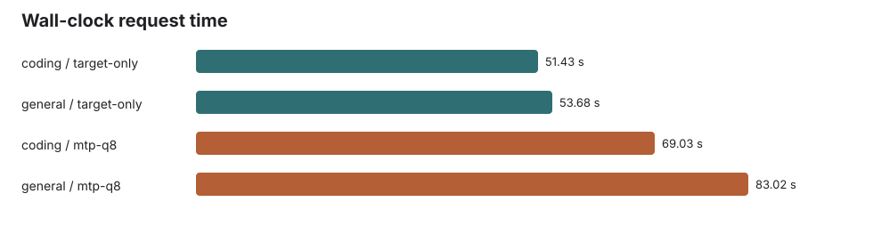
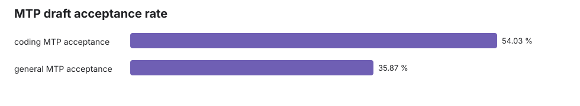

Gemma 4 12B Q4_K_XL vs Q8 MTP Assistant
2K-class input / 2048-token output benchmark at 64K context. Generated 2026-06-03T14:12:28 local time.
Result: in this local llama.cpp branch run, the Q8_0 MTP assistant was active but slower than target-only. Coding generation ran at 43.35 tok/s target-only vs 31.64 tok/s with MTP. General generation ran at 42.51 tok/s target-only vs 26.23 tok/s with MTP.
Configuration
- Target:
gemma-4-12b-it-UD-Q4_K_XL.gguf - Assistant:
gemma-4-12B-it-assistant-Q8_0.gguf - Context:
65536; batch4096; ubatch512; flash attention on - MTP lane:
--spec-type draft-mtp, draft max3, draft KVq8_0/q8_0 - Generation:
n_predict=2048,temperature=0, server--ignore-eos
Interpretation
The assistant did produce accepted draft tokens, but the cost of the assistant path outweighed the accepted-token savings for these two long forced-decoding prompts on this machine. The coding acceptance rate was 54.0%; the general acceptance rate was 35.9%.
Because EOS was ignored to force exactly 2048 output tokens, generated text quality is not the subject of this run. Outputs diverged between target-only and MTP, so treat this report as a throughput and runtime-activity benchmark, not a correctness equivalence test.
Summary Table
| Prompt | Input tokens | Output tokens | Target-only tok/s | MTP tok/s | MTP speed | Result | Acceptance | Accepted / generated draft tokens |
|---|---|---|---|---|---|---|---|---|
| coding | 2053 | 2048 | 43.35 | 31.64 | 73.0% | 1.37x slower | 54.0% | 1266 / 2343 |
| general | 2059 | 2048 | 42.51 | 26.23 | 61.7% | 1.62x slower | 35.9% | 1061 / 2958 |
Charts



Raw Measurements
| Prompt | Lane | Input tokens | Output tokens | Prompt tok/s | Generation tok/s | Wall seconds | Acceptance |
|---|---|---|---|---|---|---|---|
| coding | target-only | 2053 | 2048 | 490.05 | 43.35 | 51.43 | |
| general | target-only | 2059 | 2048 | 384.28 | 42.51 | 53.68 | |
| coding | mtp-q8 | 2053 | 2048 | 478.05 | 31.64 | 69.03 | 54.0% |
| general | mtp-q8 | 2059 | 2048 | 429.93 | 26.23 | 83.02 | 35.9% |
Artifacts
results.json: machine-readable metricsresponse-*.jsonandresponse-*.txt: retained raw responseslogs/server-target-only.logandlogs/server-mtp-q8.log: llama-server load and timing logsprompts/coding.txtandprompts/general.txt: exact prompts